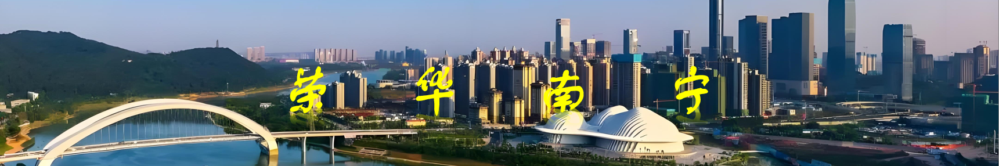
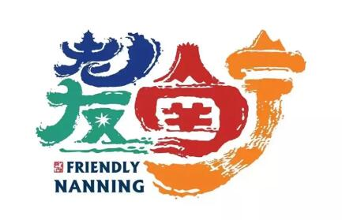

首页
家乡简介
风景名胜
美食特色
站长简介
在线调查
在线调查
1.您的家乡：
2.你了解你的家乡吗？
了解
很了解
不了解
比较好
比较差
不太清楚
3.您心目中的家乡是什么样子的？（可多选）
经济水平明显提高，人们的钱袋子鼓起来
出行变得更加方便，道路通畅，交通便利
生活水平改善，文化娱乐生活丰富
美食丰富，传统小吃和特色美食回归，人们也讲究科学饮食
社会福利丰富，社会保障完善，风气优良
回归传统，保留一份传统的田园生活气息
其他补充
4.您认为您的家乡有什么传统：
5.您认为您的家乡有什么美食特色：
6.您认为您的家乡有什么名胜风景：
7.您觉得您的家乡的社会风气如何？
很好
8.请填写您的宝贵意见:

大美广西 荣华南宁
welcome to Nanning|南宁欢迎您！